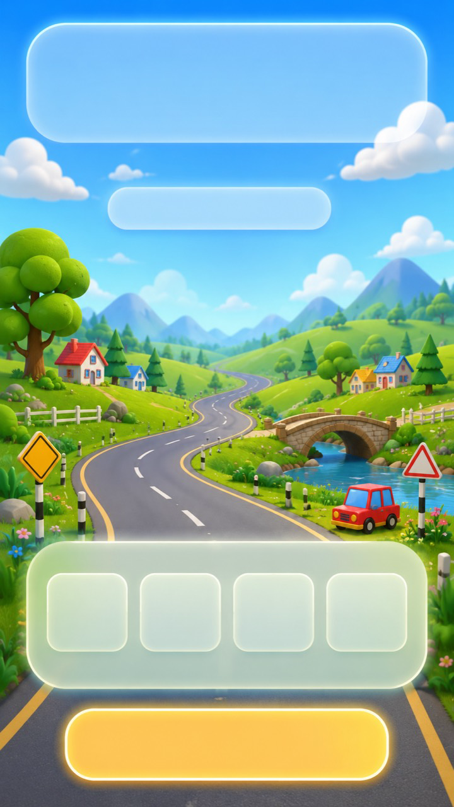

Bianca
Meny
Trykk på et bilde for å åpne spillet eller appen.
 Barnas Magiske Rom
Startside med lekene og Magiske Mikrofonen
Barnas Magiske Rom
Startside med lekene og Magiske Mikrofonen
 Magiske Mikrofonen
Snakk, lytt og bruk roast fra mobilen
Magiske Mikrofonen
Snakk, lytt og bruk roast fra mobilen

Bilbingo Se etter biler og få poeng på bilturen Spørsmåls Lab
Still spørsmål med tekst, bilde og tale
Spørsmåls Lab
Still spørsmål med tekst, bilde og tale